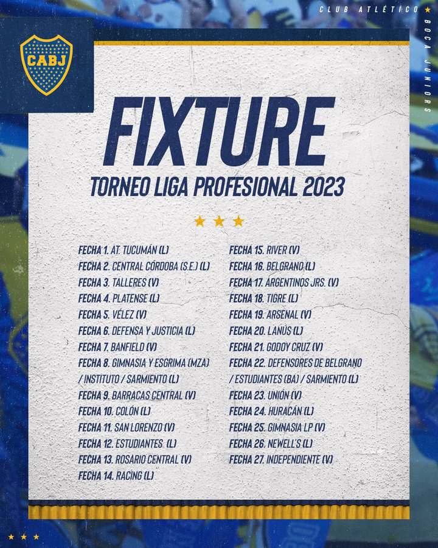
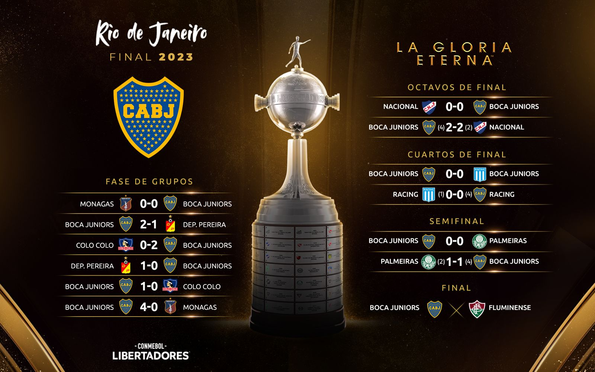
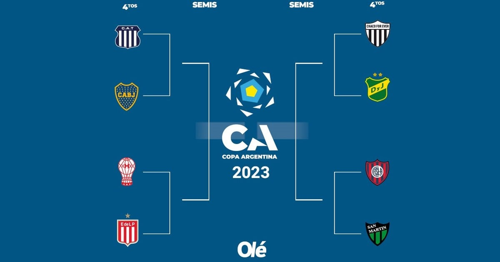

Xenei
Web
Plantel
Competiciones
La web de todos los bosteros
Noticias recientes:
click para ir a la noticia
Valentin Barco, Jugador del plantel profesional
click para ver el plantel
Fixture Liga de la liga profesional Argentina

El camino de boca hacia la final de la copa libertadores

El camino de boca en la copa Argentina
